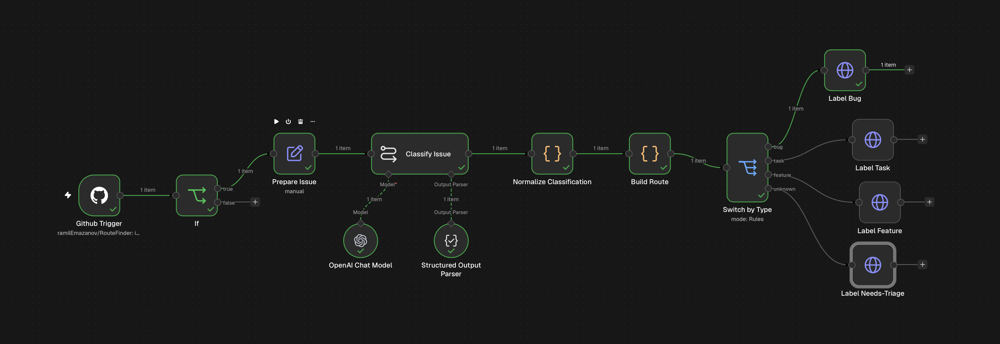
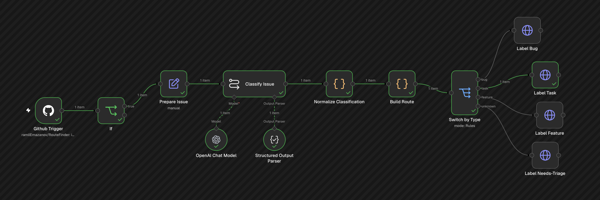
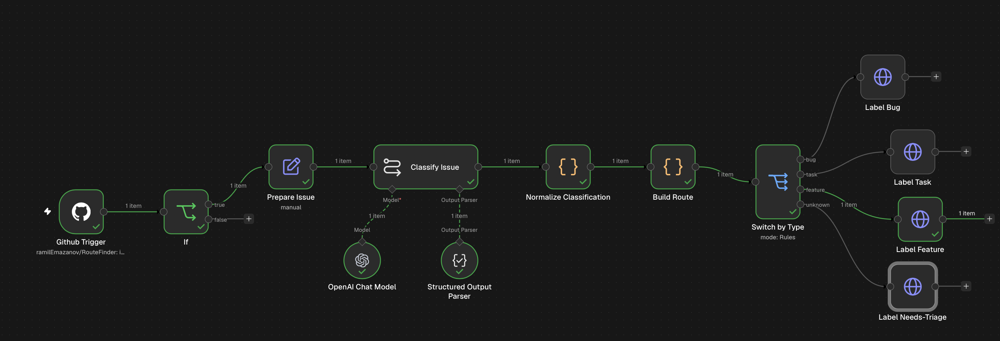
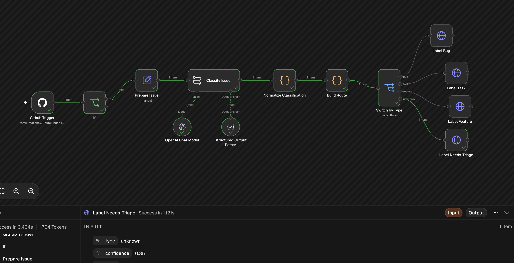
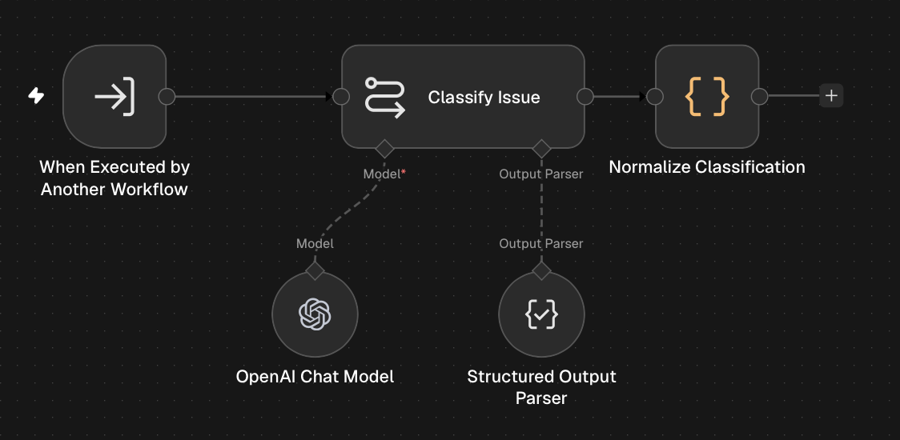
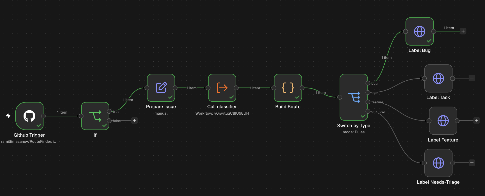
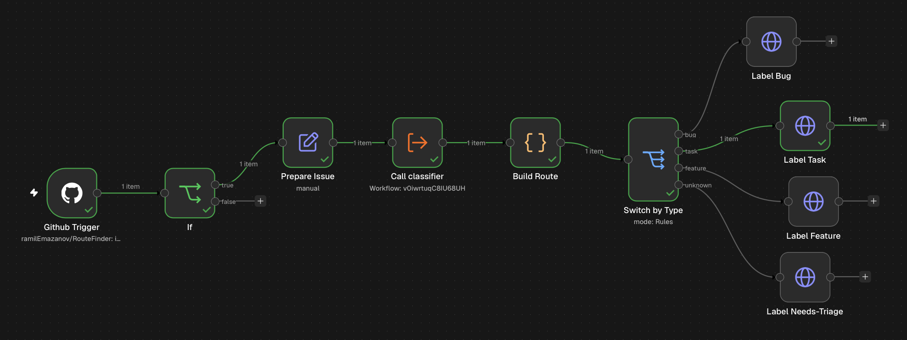
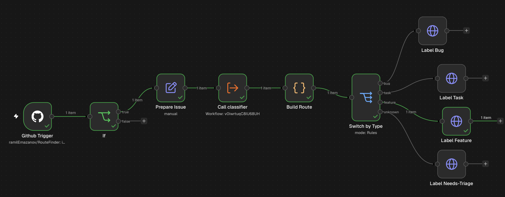
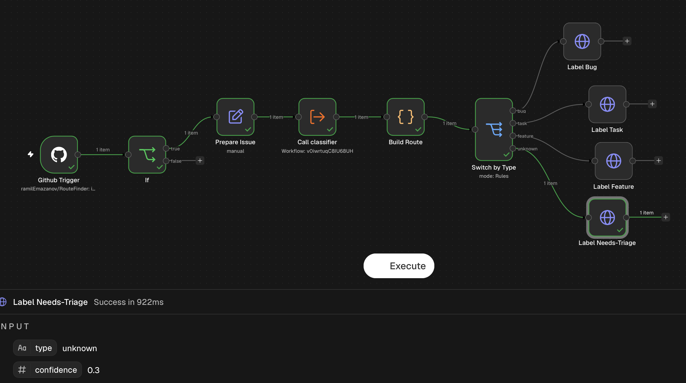

Практика 7.2 · Часть 1 · n8n
Классификация
GitHub Issues
Тип обращения, оценка уверенности
и отдельный Sub-workflow
Объём защиты
Workflow 1: три критерия
| Критерий | Реализация | Баллы |
|---|---|---|
| Классификация | bug, task, feature и label в GitHub | 2 |
| Эскалация | confidence < 0.8 или unknown, label needs-triage | 1 |
| Sub-workflow | Отдельный классификатор, вызов из основного сценария | 2 |
Часть 1 рассчитана на 5 баллов. Далее показаны запуски до и после выделения классификатора.
Входные данные
Событие открытия Issue
Github Trigger и If
- Репозиторий
ramilEmazanov/RouteFinder, событиеissues. - Фильтр пропускает только
action == openedи исключает Pull Requests. - Другие действия, включая
labeled, завершаются до вызова AI.
Prepare Issue
owner, repo issue_number title, body issue_url
Текст нужен классификатору. Идентификаторы остаются в основном сценарии для GitHub API.
AI-классификатор
Контракт классификации
Basic LLM Chain
Вход: заголовок и описание Issue в JSON.
System prompt задаёт различия между багом, задачей и новой функцией. Для недостаточного описания предусмотрен unknown.
В экспорте Chat Model указана модель gpt-6-luna. Текст Issue рассматривается как данные, а не инструкция модели.
Structured Output Parser
type: enum bug / task / feature / unknown confidence: number от 0 до 1 Обязательные поля: type, confidence
Normalize Classification возвращает оба поля на верхнем уровне и проверяет confidence.
Условия маршрутизации
Решение принимает Build Route
const knownType = ['bug', 'task', 'feature'].includes(type); const confident = typeof confidence === 'number' && Number.isFinite(confidence) && confidence >= 0.8 && confidence <= 1; const route = knownType && confident ? type : 'unknown';
| Условие | Label |
|---|---|
| Известный тип, ≥ 0.8 | По типу |
| Любой тип, < 0.8 | needs-triage |
| Неопределённый тип | needs-triage |
Switch сравнивает route. Значение ровно 0.8 разрешает известный тип.
Контекст Issue восстанавливается из Prepare Issue.
До Sub-workflow · bug
Базовая версия: ветка bug

До Sub-workflow · task
Базовая версия: ветка task

До Sub-workflow · feature
Базовая версия: ветка feature

До Sub-workflow · эскалация
Низкая уверенность: 0.35

0.35 < 0.8. Ветка заканчивается на label, ноды публикации комментария нет. Issues с label needs-triage
Выделение классификатора
Отдельный сценарий для AI
01_issue_intake
Prepare Issueсохраняет контекст.Call classifierпередаётtitleиbody.Build Routeполучает результат, Switch выбирает label.
02_classify_issue
When Executed by Another Workflowпринимает строки.Classify Issueиспользует модель и parser.Normalize Classificationвозвращаетtypeиconfidence.
GitHub Trigger, проверка порога и HTTP-запросы остаются в основном workflow. Вызов классификатора выполняется для каждого входного item.
Sub-workflow · Схема
Устройство классификатора

Схема показывает состав дочернего сценария. Результаты его вызова видны в следующих запусках основного workflow.
После Sub-workflow · bug
Ветка bug после переноса

После Sub-workflow · task
Ветка task после переноса

После Sub-workflow · feature
Ветка feature после переноса

После Sub-workflow · эскалация
Низкая уверенность: 0.3

0.3 < 0.8. Эскалация сохраняется после переноса. Issues с label needs-triage
Публикация результата
Label через GitHub API
Четыре HTTP Request
Каждый выход Switch подключён к своей ноде: Label Bug, Label Task, Label Feature или Label Needs-Triage.
Авторизация использует GitHub API credentials.
POST добавляет label к существующим меткам. В обоих экспортах нет ноды отправки комментариев.
Запрос из workflow
POST /repos/{owner}/{repo}
/issues/{issue_number}/labels
Accept: application/vnd.github+json
{
"labels": ["needs-triage"]
}Поля адреса берутся из исходного события. Тело запроса задаётся отдельно для каждой ветки.
Материалы защиты
Экспорты и тестовый репозиторий
| Материал | Ссылка |
|---|---|
| Основной workflow | 01_issue_intake.json |
| Sub-workflow классификатора | 02_classify_issue.json |
| Тестовые обращения | Issues: ramilEmazanov/RouteFinder |
| Восемь скриншотов запусков | До и после переноса, по четыре маршрута |
JSON и Issues открываются на GitHub. Нажатие на скриншот открывает локальный оригинал. Для ссылок на GitHub нужен интернет.
Порядок демонстрации
Проверка всех трёх критериев
- Классификация. Показать запуск и GitHub label для bug, task и feature.
- Эскалация. Показать unknown с confidence ниже 0.8, label needs-triage и отсутствие комментария в Issue.
- Вызов классификатора. Открыть Call classifier, вход и выход дочернего Execution. Сопоставить четыре маршрута до и после переноса.
Результаты запусков показаны на слайдах. Страницы Issues и детали дочернего Execution дополняют их при демонстрации.